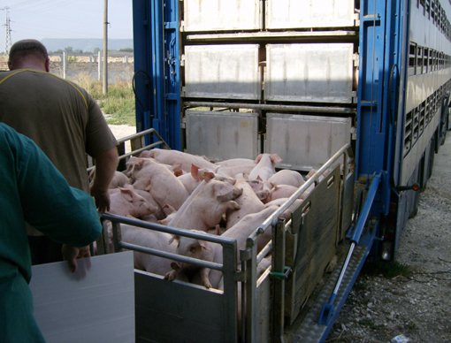

Ich verabscheue Massentierhaltung weil es unzumutbar ist. Die Tiere sind eingepfercht auf engem Raum und leiden. Sie haben keine Lebensqualität.
Ich wäre bereit 8-9 €/ Kg Schweinefleisch zu zahlen.
Muss aber zugeben, dass ich Schnäppchenjäger bin und auch gerne günstig einkaufen.
Die schwarzen Schafe der Massentierhaltungsanlagen sollten stärker verfolgt werden.
Massentierhaltung
Kategorie: Landbewirtschaftung in Mecklenburg-Vorpommern · 17 Beiträge (statisches Archiv)
Re: Massentierhaltung
MAssentierhaltung hat Vor- und Nachteile.
Die Vorgaben eingehalten werden.
Solange der Antiobiotikaeinsatz auf das Minimum reduziert / Notwendigste reduziert wird, sollte es nicht pauschal verurteilt werden.
Man sollte es reel sehen.
Die Vorgaben eingehalten werden.
Solange der Antiobiotikaeinsatz auf das Minimum reduziert / Notwendigste reduziert wird, sollte es nicht pauschal verurteilt werden.
Man sollte es reel sehen.
Re: Massentierhaltung
Massentierhaltung ist der größte Unsinn den es gibt, da es nichts mit Tierhaltung zu tun hat.
Ich würde mir wünschen, dass es sowas nicht mehr gibt. Tiere gehören ins grün.
Es muss aber alles in einem gesunden Verhältnis stehen.
Ich würde mir wünschen, dass es sowas nicht mehr gibt. Tiere gehören ins grün.
Es muss aber alles in einem gesunden Verhältnis stehen.
Re: Massentierhaltung
Massentierhaltung ist nicht gut, weil da zuviel Chemie eingesetzt wird.
Es sollte mehr kontrolliert werden.
Alles über 1000 Tiere ist für mich Massentierhaltung. Als früher Tiere gehalten wureden waren es max. 20-25 Tiere. Da konnte sich der Bauer noch um das Tier kümmern. Die Krankheiten waren weniger. Übersicht war da.
Es sollte mehr kontrolliert werden.
Alles über 1000 Tiere ist für mich Massentierhaltung. Als früher Tiere gehalten wureden waren es max. 20-25 Tiere. Da konnte sich der Bauer noch um das Tier kümmern. Die Krankheiten waren weniger. Übersicht war da.
Re: Massentierhaltung
andere Länder lassen ihre Tiere viel mehr nach draußen. So sollte es auch hier sein. Das sollte angestrebt werden.
Re: Massentierhaltung
Ne vse fefmeri sledat za poradkom na svoih predprijtijah. Mnogo lezit ili stoit staroj tehniki, kotoraja zanimaet mesto i ne ispozuetsa. a takze musor ostaetsa na granicah i dolgo ne ubiraetsa.
Re: Massentierhaltung
Um die Ernährung der Bevölkerung sicher zu stellen ist es notwendig eine Großzahlm an Tieren auf den Betrieben zu halten. Es gibt keine eindeutige Definition für Massentierhaltung. Desweiteren sollte jeder Verbraucher sein eigenes Verhalten überdenken, wenn er sein Haustier den ganzen Tag auf engstem Raum in der Wohnung lässt.
Alle Landwirte sind um das Wohlergehen der Tiere besorgt, da nur gesunde Tiere die gewünschte Leistung erbringen.
Die Verbraucher sind auch zu weit von der Landwirtschaft entfernt und haben keine Ahnung von der heutigen Landwirtschaft. Sie greifen Meinungen aus den Medien auf, die weder wissenschaftlich fundiert noch richtig sind.
Alle Landwirte sind um das Wohlergehen der Tiere besorgt, da nur gesunde Tiere die gewünschte Leistung erbringen.
Die Verbraucher sind auch zu weit von der Landwirtschaft entfernt und haben keine Ahnung von der heutigen Landwirtschaft. Sie greifen Meinungen aus den Medien auf, die weder wissenschaftlich fundiert noch richtig sind.
Re: Massentierhaltung
Wir kaufen immer direkt beim Bauern und zahlen dort pro Woche 50- 60 €.
Es sollte mehr dazu angeregt werden beim Bauern der Region zu kaufen. (Föderung der Regionalität!!!)
Die Preise der Milchporodukte sollten so hoch sein, dass die Kosten der Produzenten gedeckt sind. Der Landwirt sollte davon leben können. Erst dann kann er vernünftig entlohnen und zusätzlich Personen in die Region holen.
Es sollte mehr dazu angeregt werden beim Bauern der Region zu kaufen. (Föderung der Regionalität!!!)
Die Preise der Milchporodukte sollten so hoch sein, dass die Kosten der Produzenten gedeckt sind. Der Landwirt sollte davon leben können. Erst dann kann er vernünftig entlohnen und zusätzlich Personen in die Region holen.
Re: Massentierhaltung
Massentierhaltung wo die Tiere so eingepfercht sind ist nicht gerechtfertigt. Es spiegelt nicht die Gesetze der Natur wider.
Ich würde zurückgehen zu der alten Haltungsweise.
Kleinbäuerliche Strukturen sollten gefördert werden.
In M-V sollte Direktvermarktung gefördert weden. Es fehlt bei uns. (Größere Betriebe mit vernünftigender Produktion könnten sowas auch anbieten.) Warum ist ein Angebot (regionale Direktvermarktung) wie in Niedersachsen nicht auch in MV möglich?
Ich würde zurückgehen zu der alten Haltungsweise.
Kleinbäuerliche Strukturen sollten gefördert werden.
In M-V sollte Direktvermarktung gefördert weden. Es fehlt bei uns. (Größere Betriebe mit vernünftigender Produktion könnten sowas auch anbieten.) Warum ist ein Angebot (regionale Direktvermarktung) wie in Niedersachsen nicht auch in MV möglich?
Re: Massentierhaltung
Da kommt man nicht drumrum aber muss nicht unbedingt sein.
Re: Massentierhaltung
was gefördert werden sollte sind kleinere Bauern bzw. kleinere landwirtschaftliche Betriebe mit ein oder zwei Angestellten, die davon leben müssen, die Aufgrund ihrer kleinen Größe keine Kredite bekommen. Hier sollte das Ministerium besser unterstützen. Hier sollte das Ministerium eingreifen, damit sie ihre Existenzgrundlage nicht aufgeben müssen.
Re: Massentierhaltung
Ich finde Massentierhaltungsanlagen nicht gut weil es für die Tiere nicht gut ist. Ist nicht so gesund.
Re: Massentierhaltung
Wer gegen Massentierhaltung ist (was ich durchaus unterstütze), sollte aber auch in seinem eigenen Konsumverhalten entsprechend agieren. Also kein Fleisch, keine Wurst aus dem Supermarkt, sondern direkt vom Bauern nebenan. Das wäre für mich dann konsequent. Aber ich fürchte, dass viele Verbraucher auf der einen Seite die Massentierhaltung aus den verschiedensten Gründen verteufeln, sich dann aber am nächsten Tag doch wieder das Billig-Schnitzel aus dem Discounter kaufen, weil es eben günstig ist. Das ist für mich paradox.
Re: Massentierhaltung
Lieber MelaBesucher,
schön, dass Sie sich neben den anderen Angeboten auf der MeLa etwas Zeit für dieses Forum genommen haben.
Leider haben auch Sie keinen eigenen Benutzernamen bekommen.
Ihr Beitrag ist einer von ca. 75 anderen, die erst nach Abschluss der MeLa hier im Forum präsentiert wurden so dass ein direkter Meinungsaustausch mit Ihnen nicht mehr möglich ist.
Falls Sie aber an einer wirklichen Kommunikation zum Thema „Mensch u. Land“ außerhalb der Grenzen der MeLa interessiert sind, bitte ich Sie darum, sich mit selbst gewählten Benutzernamen am hier stattfindenden Diskussionsprozess zu beteiligen.
Der freie Meinungsaustausch ist besser als ein erzwungener Monolog dazu geeignet, die Probleme des ländlichen Raumes in Hinblick auf ihre Lösungsmöglichkeiten zu untersuchen.
schön, dass Sie sich neben den anderen Angeboten auf der MeLa etwas Zeit für dieses Forum genommen haben.
Leider haben auch Sie keinen eigenen Benutzernamen bekommen.
Ihr Beitrag ist einer von ca. 75 anderen, die erst nach Abschluss der MeLa hier im Forum präsentiert wurden so dass ein direkter Meinungsaustausch mit Ihnen nicht mehr möglich ist.
Falls Sie aber an einer wirklichen Kommunikation zum Thema „Mensch u. Land“ außerhalb der Grenzen der MeLa interessiert sind, bitte ich Sie darum, sich mit selbst gewählten Benutzernamen am hier stattfindenden Diskussionsprozess zu beteiligen.
Der freie Meinungsaustausch ist besser als ein erzwungener Monolog dazu geeignet, die Probleme des ländlichen Raumes in Hinblick auf ihre Lösungsmöglichkeiten zu untersuchen.
Re: Massentierhaltung
Man muss sich einfach mal einen Anbindestall in Baden W. oder Bayern ansehen für 20 Milchkühe. Eng, dunkel, und fixiert. Dagegen stehen gerade in großen 200 -er bis auch 1000er Milchviehanlagen die Tiere in offenen ,hellen und geräumigen Ställen, können sich frei bewegen. Was ist daran als Massentierhaltung zu verteufeln?
Wenn sich der Landtag gegen Tierhaltungsanlagen, die eine Umweltverträglichkeitsprüfung erfordern, aussprechen will, muss man sich folgende Fakten verinnerlichen:
UVP wird ab 600 Rinder auf einem Standort gefordert, das wären z.B. ein 300 er Milchkuhstall, die dazu gehörenden 150 Jungkühe und besamungsfähige Jungrinder, ca. 100 Kälber und Jungtiere sowie in einem geschlossenen System die ca 300 Mastbullen.
Das alles entspricht einer normalen Familienbetriebsgröße in M/V. Und das will der Landtag nun verbieten?
Ja wollen wir denn alle nur noch von Harz 4 leben?
In MV wird 28 % der Exporterlöse über die Landwirtschaft erwirtschaftet, viele Gewerke hängen an der Landwirtschaft.
Es ist für mich als Landwirt so schlimm, zu merken, wie weit viele Verbraucher in ihrem realen Wissen von der Produktion ihrer Lebensmittel entfernt sind.
Eine vermenschlichung der Nutztierhaltung bringt nur eines; die Lebensmittel werden aus dem Ausland eingeführt und dort zu schlimmen Bedingungen produziert- und niemand nimmt darauf Einfluss- siehe Eierproduktion; in Deutschland waren die Käfige verboten, die wurden hier abgebaut und produzieren für den deutschen Markt lustig aus dem Ausland weiter. Unkontrolliert und in einer besseren Wettbewerbssituation als deutsche Produzenten. Da haben wir aber richtig was gekonnt...
Wenn sich der Landtag gegen Tierhaltungsanlagen, die eine Umweltverträglichkeitsprüfung erfordern, aussprechen will, muss man sich folgende Fakten verinnerlichen:
UVP wird ab 600 Rinder auf einem Standort gefordert, das wären z.B. ein 300 er Milchkuhstall, die dazu gehörenden 150 Jungkühe und besamungsfähige Jungrinder, ca. 100 Kälber und Jungtiere sowie in einem geschlossenen System die ca 300 Mastbullen.
Das alles entspricht einer normalen Familienbetriebsgröße in M/V. Und das will der Landtag nun verbieten?
Ja wollen wir denn alle nur noch von Harz 4 leben?
In MV wird 28 % der Exporterlöse über die Landwirtschaft erwirtschaftet, viele Gewerke hängen an der Landwirtschaft.
Es ist für mich als Landwirt so schlimm, zu merken, wie weit viele Verbraucher in ihrem realen Wissen von der Produktion ihrer Lebensmittel entfernt sind.
Eine vermenschlichung der Nutztierhaltung bringt nur eines; die Lebensmittel werden aus dem Ausland eingeführt und dort zu schlimmen Bedingungen produziert- und niemand nimmt darauf Einfluss- siehe Eierproduktion; in Deutschland waren die Käfige verboten, die wurden hier abgebaut und produzieren für den deutschen Markt lustig aus dem Ausland weiter. Unkontrolliert und in einer besseren Wettbewerbssituation als deutsche Produzenten. Da haben wir aber richtig was gekonnt...
Re: Massentierhaltung
Dass die Haltungsbedingungen bei Milchvieh relativ gut sind, ist bekannt. Nicht ohne Grund kann man als Bürger diese Anlagen ja auch besichtigen. Die Konzentration von vielen Tieren an einem Ort ist auf jeden Fall problematisch hinsichtlich der Auswirkungen auf Umwelt, Anwohner und die Tiere selbst. Insofern finde ich weitreichende Prüfungen vor jeder neuen Genehmigung sinnvoll. Aber wie sieht es in der Schweine- oder Geflügelmast aus? Die Zustände in diesen Anlagen sind oft so schlimm, dass man sie lieber nicht den Verbrauchern bekannt machen möchte. Alle Skandale, die in regelmäßigen Abständen durch die Medien gehen, sind nur die Spitze des Eisberges. Ich als Verbraucher finde es traurig, dass Landwirte glauben,Tierquälerei rechtfertigen zu müssen. Vielleicht bekommen kleine Bauern in Bayern einfach zu wenig von den Subventionen ab, so dass ihnen das Geld für modernere Ställe fehlt.
Re: Massentierhaltung
Landmaus hat geschrieben:
1. Das alles entspricht einer normalen Familienbetriebsgröße in M/V. Und das will der Landtag nun verbieten?
2. In MV wird 28 % der Exporterlöse über die Landwirtschaft erwirtschaftet...
3. in Deutschland waren die Käfige verboten, die wurden hier abgebaut und produzieren für den deutschen Markt lustig aus dem Ausland weiter. Unkontrolliert und in einer besseren Wettbewerbssituation als deutsche Produzenten. Da haben wir aber richtig was gekonnt...
Nach den MeLaBesucher-Monologen war über Wochen Sendepause hier im Forum.
Dann hat Landmaus provoziert u. Schwalbe hat angebissen.
Dem schließe ich mich für drei Abschlußsätze an aber danach sollte auf anderer Ebene eine neue Qualität angesteuert werden.
Denn das seit September vorliegende Grundlagenpapier MENSCH UND LAND 1.0 der Expertenkommission will in der Öffentlichkeit diskutiert werden.
zuvor aber:
zu 1. Der Landtag will gar nichts verbieten, was Landmaus zu befürchten vorgibt, die derzeitige Regierung läßt das nicht zu.
zu 2. Die erwirtschafteten 28% Exporterlöse haben ihren Preis, die dem Steuerzahler über die Subvention dieser Wirtschaftsweise aus der Tasche gezogen werden.
zu 3. Auch die Sklaverei wurde nicht überall zeitgleich abgeschafft u. wer sie länger betrieb, glaubte an seinen Wettbewerbsvorteil.
http://albert-schweitzer-stiftung.de/aktuell/anfang-vom-ende-der-massentierhaltung
[Anhang: <!-- ia0 -->animal_transport_6.jpg<!-- ia0 -->]
http://stefanjanits.wordpress.com/tag/vegetarismus/
